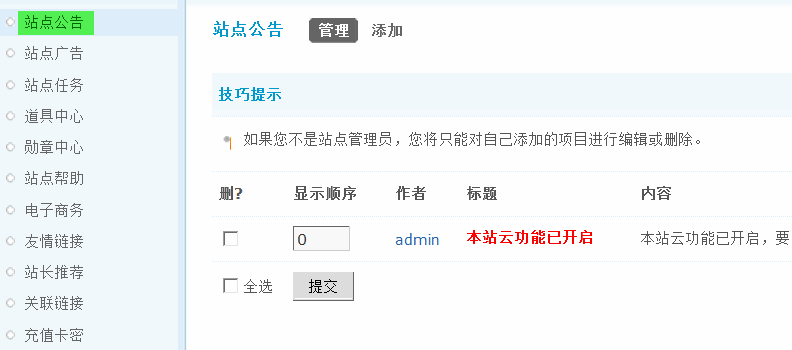
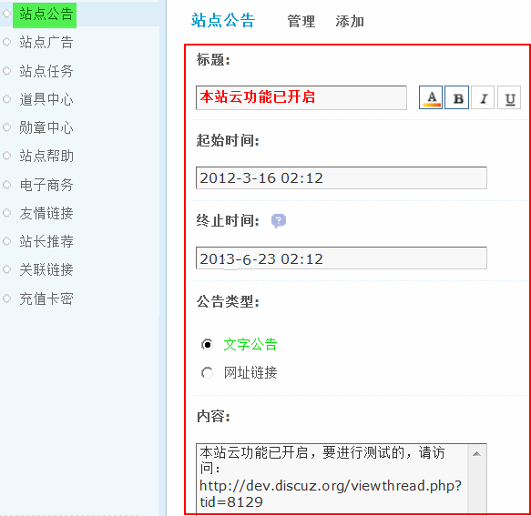
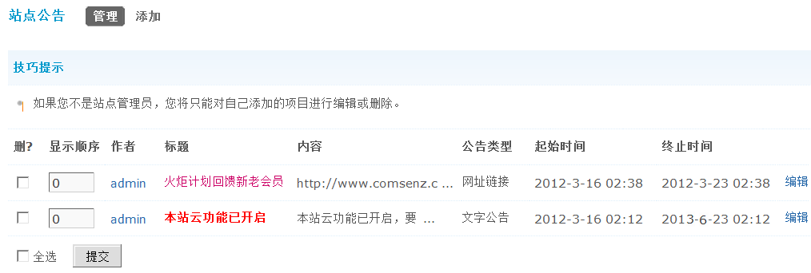
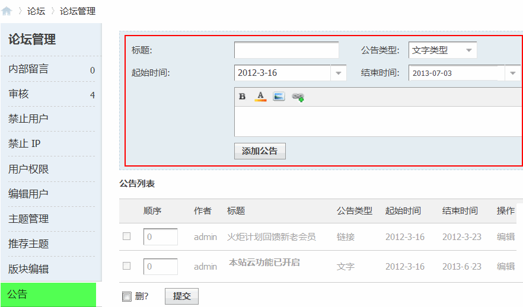
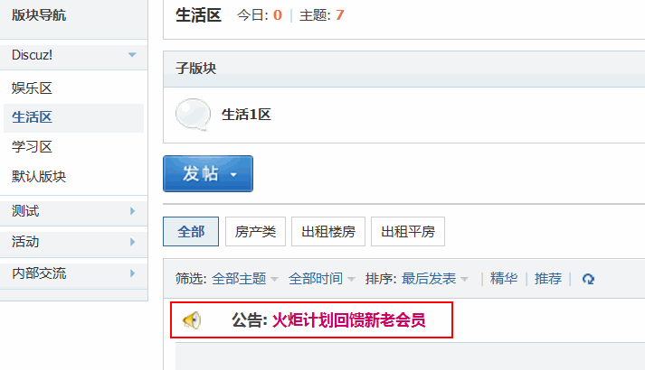

8.7. 站点公告¶
站点公告
做为站长，有时需要通知站点所有用户一些信息。站点公告即可解决这个问题，您不必逐个用户通知，也不必批量发送短消息或 Email ，只需管理员在后台添加一条公告即可。
操作路径：【后台】=>【运营】=>【站点公告】
一、添加公告
点击“添加”即可添加一个新公告。然后填写相关信息，包括标题、起始时间、终止时间、公告类型和内容。
标题：公告的标题内容。
起始时间：公告的开始时间。
终止时间：公告的结束时间。
公告类型：包括文字和网址链接。
文字公告： 直接输入公告内容，支持 Discuz! 代码，点击该公告将跳转到公告详细信息页面。
网址链接：输入公告的链接地址如某个主题地址，在前台查看公告时点击该公告将跳转到公告内容部分指定的网址。
二、管理公告
管理人员添加好的公告，可以在这里统一管理，如果你不是站点管理员，你将只能对自己添加的项目进行编辑或删除。
可以对公告进行批量/单独删除，修改显示顺序，编辑公告详细信息。
如果想让其它非创始人或者管理员也有权限添加公告，可以在管理组里设置权限。
操作路径：【后台】=>【用户】=>【管理组】选择允许添加公告的管理组，点“管理权限”，然后选择“管理面板权限”允许发布公告选择“是”这时该组的管理人员可以在前台的管理面板中添加相应的公告，效果为：
三、前台显示
添加好公告后在前台的显示效果：

注意：添加两条公告以上，将会从下往上翻滚显示；
如果有多条公告，版块内只显示最新的一条公告，可以点击进入查看全部公告。
